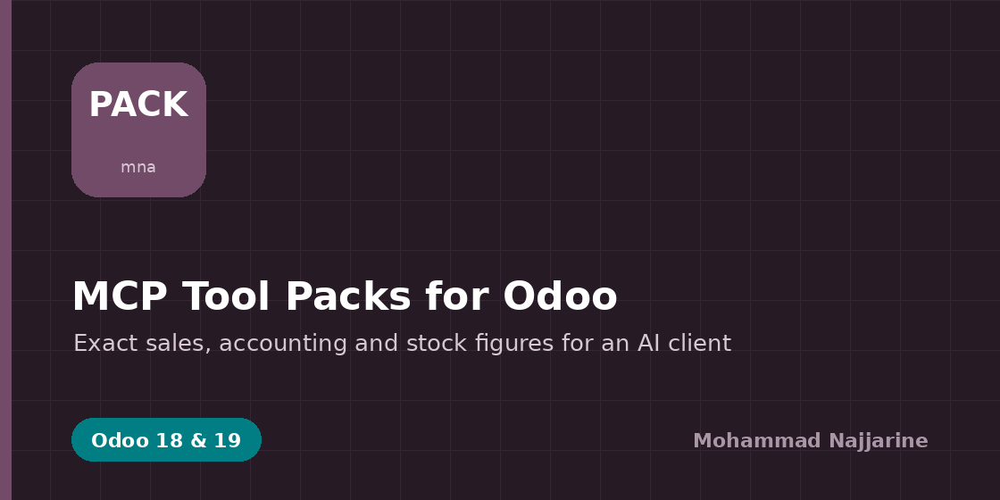
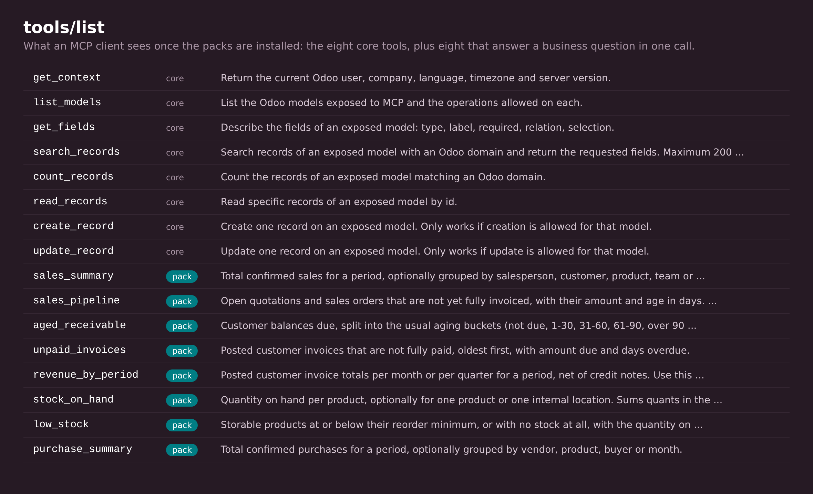
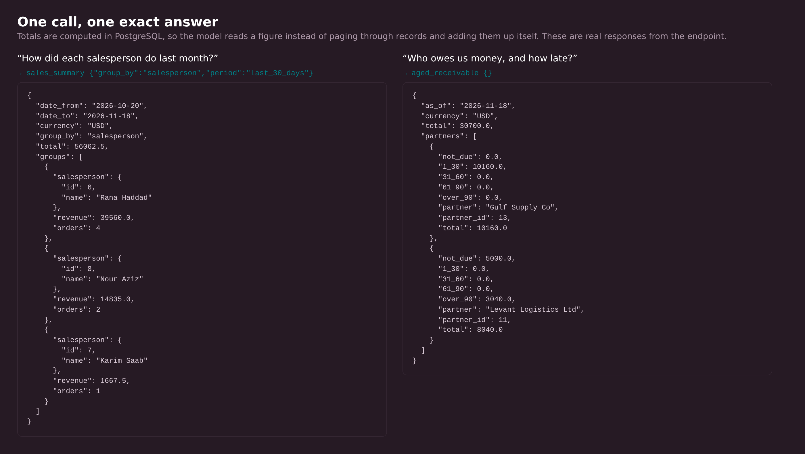
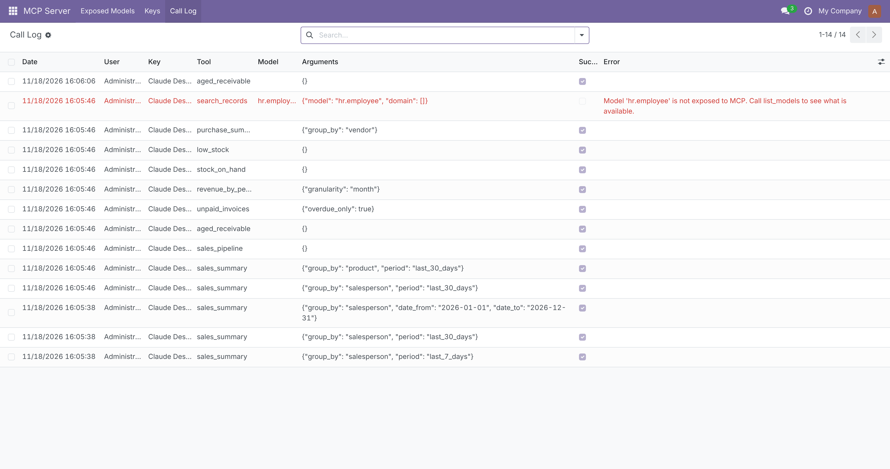

An extension for MCP Server for Odoo. The server on its own gives an AI client generic CRUD: search, read, create, update. That answers “find invoice INV/2026/0042” well, and answers “what did we sell last month by salesperson” badly, because the model has to page through hundreds of records and add them up itself. It will do that, and it will be wrong by a page.
These eight tools aggregate inside PostgreSQL and return one short, exact answer. Free, and open source under LGPL-3.
sales_summary totals for a period, grouped by salesperson, customer, product, team or month. sales_pipeline open quotations and orders with their age in days.
aged_receivable in the usual buckets. unpaid_invoices with days overdue. revenue_by_period per month or quarter, net of credit notes.
stock_on_hand per product, by location if you want. low_stock products at or below their reorder minimum, with incoming quantities.
purchase_summary confirmed purchases for a period, grouped by vendor, product, buyer or month.
A pack is hidden from tools/list when the app it reports on is not installed, so the client is never offered a tool that cannot work.

Real responses from the endpoint. The totals come from PostgreSQL, so the model reads a figure rather than estimating one.

Every pack tool goes through the allowlist the core module already uses. aged_receivable stays unavailable until you expose account.move.line for reading, and the refusal says exactly which model is missing.
No pack tool writes anything. All of them run with the permissions of the user who owns the API key, so record rules and multi-company rules apply exactly as they do in the interface. A salesperson's key cannot read accounting.
Tool, arguments, user, key and result, successes and refusals alike.
Below: thirteen pack calls answered, and one call refused because the model was not on the allowlist.

| Odoo | 18.0 and 19.0, Community or Enterprise |
| Depends on | MCP Server for Odoo, which is also free |
| Licence | LGPL-3 |
| Tested | 12 automated tests driven through the real /mcp endpoint, including a summary checked against a hand count and credit notes netted out of revenue |
Written and maintained by Mohammad Najjarine, Odoo consultant. Questions and bug reports are answered.